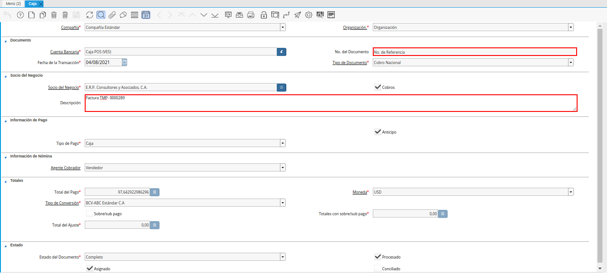
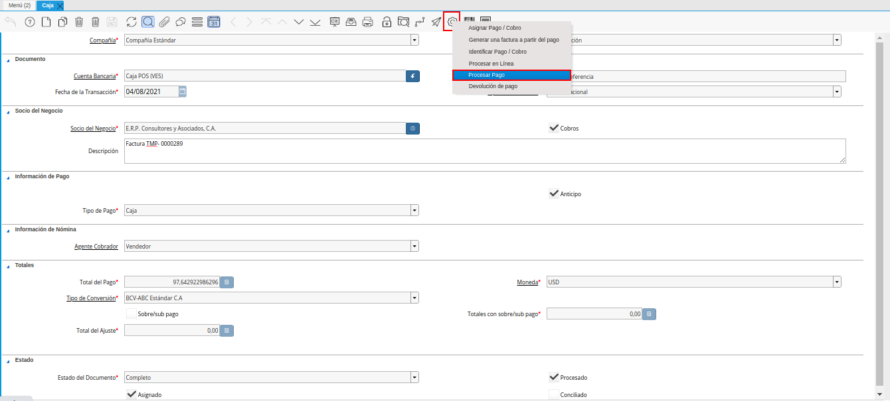
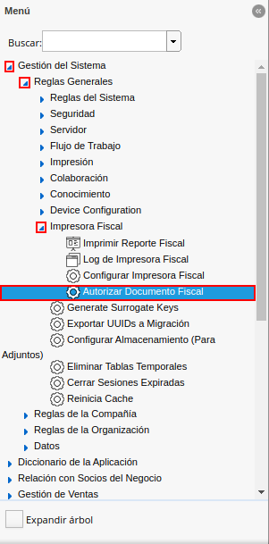
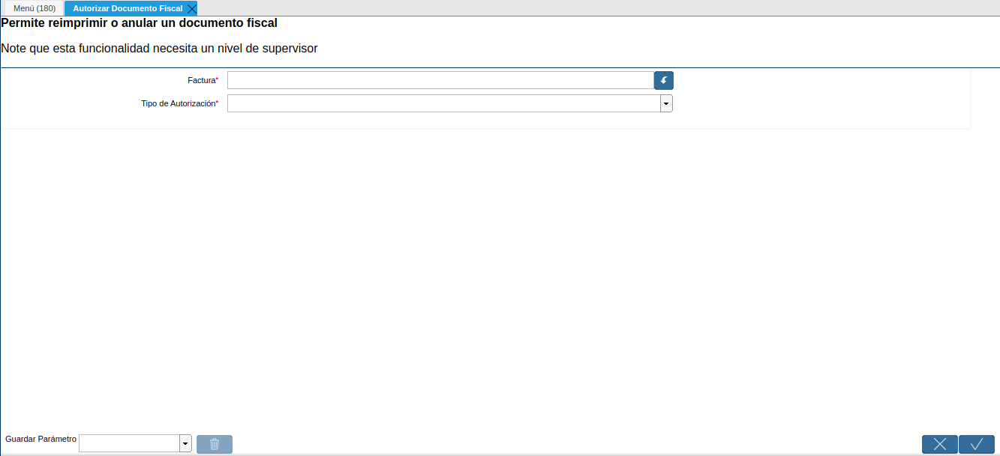
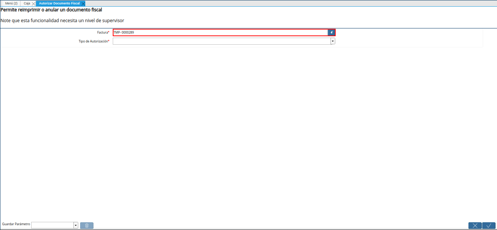
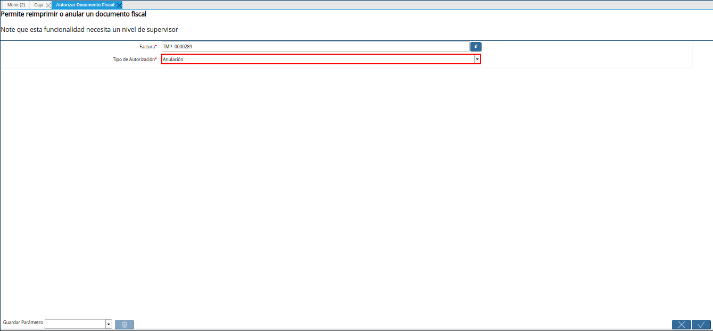
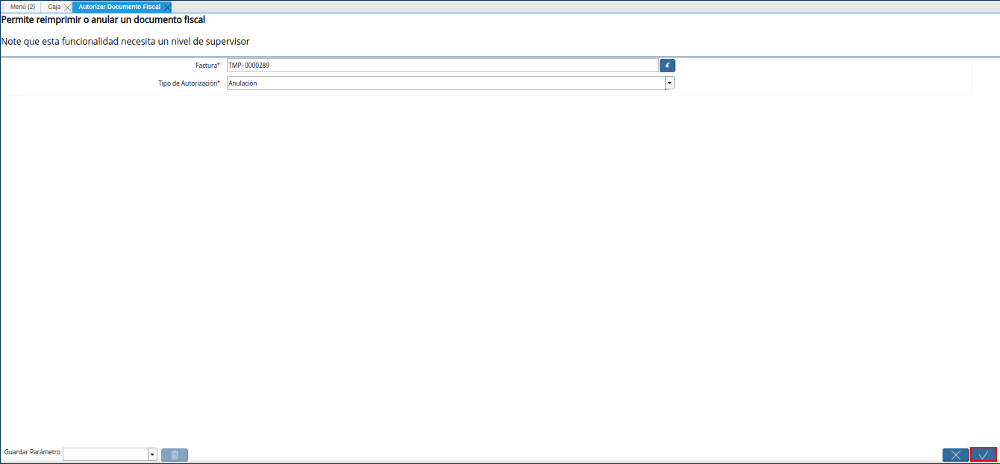
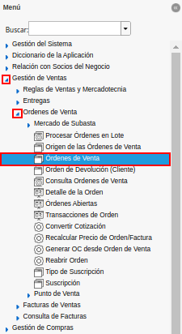
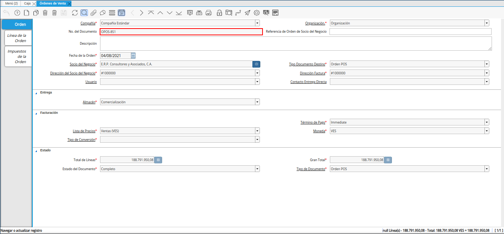
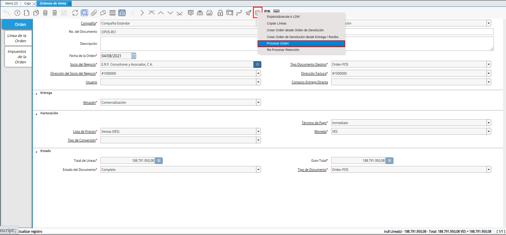

Anular Factura Fiscal¶
Suponiendo que el día “04/08/2021”, se tiene la orden de venta “OPOS-851” y la factura asociada a dicha orden es la “TMP- 0000289”. Adicional a ello, el cobro correspondiente a las mismas es el “No. de Referencia”. En ADempiere cuando por algún motivo se requiere anular una factura fiscal cuando la misma no fue impresa en su momento. Se debe realizar el siguiente procedimiento.
Reversar Cobros¶
Ubique en el menú de ADempiere, la carpeta “Gestión de Saldos Pendientes”, luego seleccione la carpeta “Diario de Caja”, por último seleccione la ventana “Caja”.
Imagen 1. Menú de ADempiere

Con ayuda del número de documento, ubique el cobro asociado a la factura que requiere anular.

Imagen 2. Ubicar Cobro
Seleccione la opción “Procesar Cobro”, ubicada en el menú desplegado por la selección del icono “Proceso”, dicho icono se encuentra ubicado en la barra de herramientas de ADempiere, en la ventana “Caja”.

Imagen 3. Opción Procesar Pago del icono Proceso de la Ventana Caja
Seleccione la acción “Reversar-Corregir” y la opción “OK”, para ejecutar el proceso de reverso del cobro.
Imagen 4. Acción Reversar-Corregir y Opción OK

Note
El procedimiento explicado anteriormente, debe ser realizado con los diferentes cobros que tiene asociado la factura.
Anular Factura¶
Unique en el menú de ADempiere, la carpeta “Gestión de Sistema”, luego seleccione la carpeta “Reglas Generales”, por último seleccione la carpeta “Impresora Fiscal”. Finalmente, seleccione el proceso “Autorizar Documento Fiscal”.

Imagen 5. Menú de ADempiere
Podrá visualizar la ventana del proceso “Autorizar Documento Fiscal”, con los campos necesarios para ejecutar el proceso requerido por el usuario.

Imagen 6. Ventana Autorizar Documento Fiscal
Seleccione en el campo “Factura”, la factura involucrada en el proceso que requiere ejecutar.

Imagen 7. Campo Factura
Seleccione en el campo “Tipo de Autorización”, la opción “Anulación”, para anular la factura seleccionada en el campo “Factura”.

Imagen 8. Campo Tipo de Autorización
Seleccione la opción “OK”, para ejecutar el proceso “Autorizar Documento Fiscal”, en base a lo seleccionado en los campos explicados anteriormente.

Imagen 9. Opción OK
Anular Orden de Venta¶
Ubique en el menú de ADempiere, la carpeta “Gestión de Ventas”, luego seleccione la carpeta “Órdenes de Venta”, por último seleccione la ventana “Órdenes de Venta”.

Imagen 10. Menú de ADempiere
Con ayuda del número de documento, ubique la orden de venta asociada a la factura anulada.

Imagen 11. Ubicar Orden de Venta
Seleccione la opción “Procesar Orden”, ubicada en el menú desplegado por la selección del icono “Proceso”, dicho icono se encuentra ubicado en la barra de herramientas de ADempiere, en la ventana “Órdenes de Venta”.

Imagen 12. Opción Procesar Orden del Icono Proceso de la Ventana Órdenes de Venta
Seleccione la acción “Anular” y la opción “OK”, para ejecutar el proceso de anular orden.
Imagen 13. Acción Anular y Opción OK